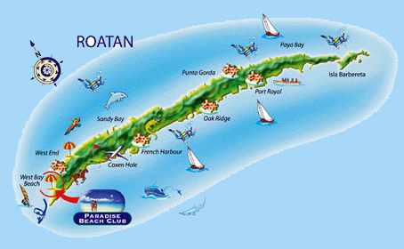

Visita a una isla de Honduras que se llama roatan
Roatán es una de las islas caribeñas de la Bahía de Honduras. Parte de la enorme barrera de coral mesoamericana, es conocida por sus playas, sitios de buceo y vida marina, incluyendo tiburones ballena. En el suroeste está ocupado West Bay Beach, con un arrecife de coral cerca de la costa. Cruceros muelle en la capital de Coxen Hole y cerca de Mahogany Bay. Al este están los asentamientos más pequeños, incluyendo la aldea Garifuna de Punta Gorda
La isla descansa sobre un arrecife de coral antiguo expuesto, que se eleva a unos 270 metros (890 pies) sobre el nivel del mar. Los arrecifes en alta mar ofrecen oportunidades para el buceo. [1] La mayoría de la vivienda está en la mitad occidental de la isla. La ciudad más poblada de la isla es Coxen Hole, capital del municipio Roatán, ubicado en el suroeste. Al oeste de Coxen Hole se encuentran los asentamientos de Gravel Bay, Flowers Bay y Pensacola en la costa sur, y Sandy Bay, West End y West Bay en la costa norte. Al este de Coxen Hole se encuentran los asentamientos de Mount Pleasant, Puerto Francés, Parrot Tree, Jonesville y Oakridge en la costa sur y Punta Gorda en la costa norte. El barrio más oriental de la isla está separado por un canal a través de los manglares que es de 15 metros de ancho en promedio. Esta sección se llama Helene, o Santa Elena en español. Las islas de satélite en el extremo oriental son Morat, Barbareta y Pigeon Cay. Más al oeste entre el puerto francés y Coxen Hole son varios cayos, incluyendo Stamp Cay y Barefoot Cay
